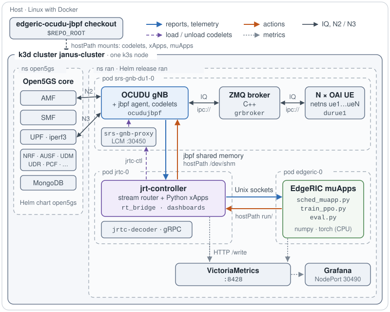
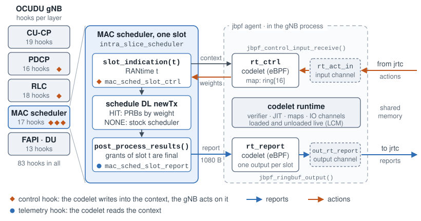
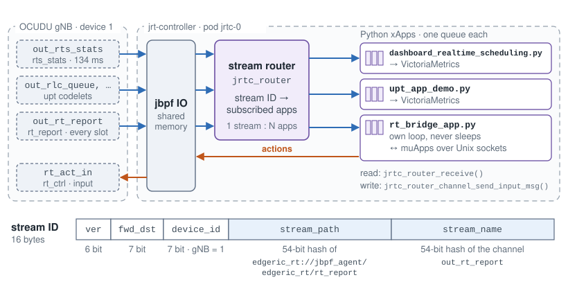
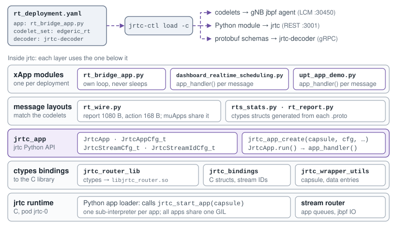
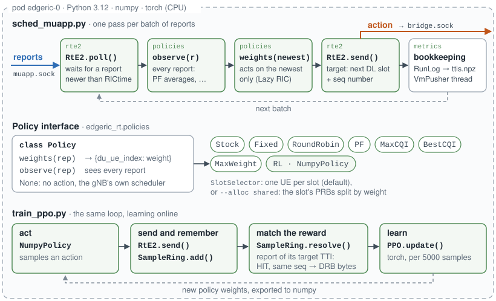
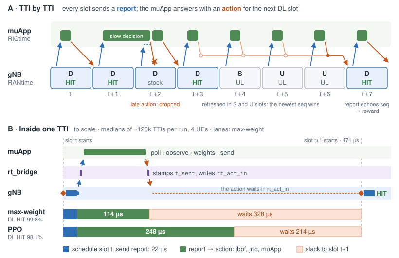
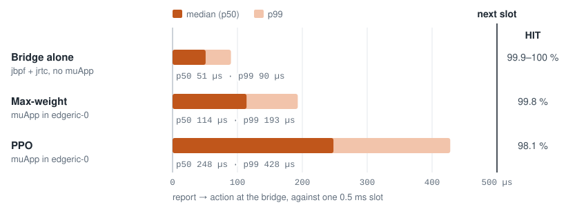

EdgeRIC with OCUDU-jbpf: System Design¶
EdgeRIC runs AI-in-the-loop control of the RAN at the TTI timescale. This release runs it on the OCUDU gNB instrumented with jbpf. Every slot, two jbpf hooks in the MAC scheduler carry the state of every UE out and the muApp’s action back in. jrt-controller (jrtc) moves them between the gNB and the muApps. The whole system runs on one server as a k3d (Kubernetes) cluster.
Code: edgeric-ocudu-jbpf (branch open-ai-ran-tutorial).
Guides: README (build
and deploy) and
edgeric-rt.md
(the loop and the muApps).
End-to-End Deployment on k3d¶


One cluster, two namespaces, three RAN pods. Blue carries reports and telemetry out of the gNB, orange carries actions back in, the dashed purple line loads codelets and the dotted lines carry metrics.¶
open5gs: the 5G core, from the Open5GS Helm chart. iperf3 servers on the UPF generate traffic.
ran: one Helm release (
jrtc-apps/containers/Helm) creates three pods.srs-gnb-du1-0: the OCUDU gNB with its jbpf agent, a C++ ZMQ broker and N Duranta OAI UEs, each UE in its own network namespace. They run as ephemeral containers and pass IQ samples over ZMQipc://sockets in place of radios.srs-gnb-proxytakes codelet loads on port 30450.jrtc-0: jrt-controller with its stream router and Python xApps, plusjrtc-decoder.edgeric-0: the EdgeRIC muApps, with Python 3.12, numpy and PyTorch (CPU).
VictoriaMetrics and Grafana (NodePort 30490) serve the dashboards.
The pods talk through host directories they share. The gNB and jrtc mount the same host directory as
/dev/shm, so jbpf’s shared memory spans both pods. jrtc and edgeric-0 mount the same run/
directory, which holds the Unix sockets between the bridge and the muApps. The xApps and muApps run
straight from the repo checkout, mounted into the pods, so changing one needs no image rebuild.
Software Architecture¶
Four layers, from the gNB up: jbpf hooks in the gNB, the jrtc stream router, xApps on jrtc and the EdgeRIC muApps.
jbpf Hooks in the OCUDU gNB¶


Left: the gNB’s hooks per layer. Right: one slot of the MAC scheduler, with the two EdgeRIC-RT hooks and their codelets.¶
A hook is a call site compiled into the gNB. When a codelet is attached to it, the gNB thread runs the
codelet inline and passes it a pointer to a context struct. A codelet is eBPF: jbpf verifies it and
JIT-compiles it when it is loaded, and codelets load and unload while the gNB runs. A codelet talks to
jrtc through channels in shared memory. jbpf_ringbuf_output() writes to an output channel and
jbpf_control_input_receive() reads an input channel. At a control hook the codelet also writes into
the context, and the gNB acts on what it wrote.
EdgeRIC-RT adds two hooks to the MAC scheduler (intra_slice_scheduler):
mac_sched_slot_ctrl, a control hook, runs at the start of every slot. Its codeletrt_ctrlmoves new actions fromrt_act_ininto a 16-entry ring indexed by target TTI. It hands the gNB an action only if one targets exactly this slot.mac_sched_slot_reportruns once the slot is scheduled. Its codeletrt_reportwrites the 1080-byte report toout_rt_report. The report holds RANtime, each UE’s CQI, backlog and grants, and the echo of the action applied in the slot.
The codeletset edgeric_rt.yaml binds each codelet to its hook and declares its channels.
rt_wire.h and its Python mirror rt_wire.py fix the byte layout of the report and the action.
Building the codelets produces their eBPF objects and, for each output channel, a protobuf serializer
and a ctypes module for Python xApps.
jrtc Stream Router¶


The router fans each output stream out to the apps that subscribed to it. The stream ID ties a channel to the codelet that owns it.¶
jrtc’s router thread reads the codelets’ output channels from jbpf’s shared memory. It puts each
message on the queue of every app subscribed to that stream, without copying it, so one stream can
feed many apps. Each app drains its own queue with jrtc_router_receive(). To reach a codelet, an
app writes into the codelet’s input channel with jrtc_router_channel_send_input_msg().
A stream ID is 16 bytes. jrtc-ctl derives it when it loads a deployment, from the device, the
stream path <deployment>://jbpf_agent/<codeletset>/<codelet> and the channel name.
xApps on jrtc¶


Top: loading a deployment. Bottom: the Python packages an xApp stands on.¶
An xApp is a deployment YAML plus a Python module. jrtc-ctl load -c <yaml> loads the codelets
into the gNB, the module into jrtc and the protobuf schemas into the decoder. jrtc runs each Python
xApp in its own sub-interpreter and calls its jrtc_start_app(capsule). There the xApp declares its
streams with JrtcStreamCfg_t and its queue and timeouts with JrtcAppCfg_t. It then runs one of
two ways:
Handler.
jrtc_app_create(...), thenJrtcApp.run()callsapp_handler(timeout, stream_idx, data_entry, state)for every message. The dashboard xApps work this way.Own loop.
rt_bridgesubclassesJrtcAppand loops without sleeping. It callsjrtc_router_receive()andjrtc_router_channel_send_input_msg()directly, so a report leaves within microseconds.
All Python xApps in jrtc share one GIL, so a heavy xApp delays the bridge. Keep the xApps that run next to the bridge light.
EdgeRIC muApps¶


Top: one pass of the scheduler muApp. Middle: the interface every scheduler implements. Bottom: how the PPO trainer learns from the same loop.¶
A muApp is a plain Python process in edgeric-0, so it can use numpy and PyTorch and never shares
jrtc’s interpreter. Reports arrive on the Unix socket muapp.sock and actions go to bridge.sock.
edgeric_rt.rte2.RtE2 wraps both sockets:
poll()blocks until a report arrives, then drains the queue and returns every report newer than RICtime.send(rep, weights)tags the action with the next DL slot after the report, and with a sequence number.
A scheduler is a Policy with two methods. observe(rep) sees every report. weights(rep)
returns a weight per UE for the newest one, or None to leave the slot to the gNB’s own scheduler.
The muApp sends the action before it logs anything, since the action must reach the gNB within the
slot.
To train, SampleRing matches each action to the report of the slot it was applied in, which echoes
its sequence number. State, action and reward therefore always belong to one TTI. PyTorch runs only
for the PPO updates. Decisions run in numpy (NumpyPolicy), in about 70 µs.
Python Packages¶
Package or module |
Runs in |
Interface |
|---|---|---|
|
|
|
|
|
ctypes bindings to |
|
|
The bridge xApp: reports to |
|
both |
The 1080-byte report and the 168-byte action: |
|
|
|
|
|
|
|
|
|
|
|
|
|
|
|
|
|
|
EdgeRIC Control, TTI by TTI¶


A: eight slots of the TDD pattern. B: one TTI to scale, with medians over about 120,000 TTIs per run (4 UEs, full buffer). Under ZMQ emulation the gNB starts a slot every 471 µs at the median; the TTI is 0.5 ms.¶
RANtime is the gNB’s slot counter, carried in every report. RICtime is the RANtime of the newest report the muApp has read.
Every slot sends a report, UL slots included.
The muApp tags each action with the first DL slot after its report. During S and U slots it refreshes the action for the next DL slot, and
rt_ctrlkeeps the newest.At the start of each slot,
rt_ctrlapplies an action only if one targets exactly this RANtime (a HIT). Otherwise the slot runs the gNB’s own scheduler, and an action that arrives after its slot is dropped.The report of the slot an action was applied in echoes the action’s sequence number. The reward, the DRB bytes scheduled in that slot, is therefore paired with the action that earned it.
With no new report the muApp waits (Lazy RAN). If it falls behind, it acts on the newest report only (Lazy RIC).
Measured with 4 UEs, the gNB sends the report 22 µs into the slot. Report to action takes 114 µs with max-weight (p99 193 µs) and 248 µs with PPO (p99 428 µs). With the bridge acting by itself, without a muApp, it takes 51 µs: the cost of jbpf and jrtc. The action then waits 328 or 214 µs for its slot. Max-weight’s action lands in its exact TTI in 99.8% of DL slots, and PPO’s in 98.1%. The rest run the gNB’s own scheduler.
Latency Budget¶


Report to action at the bridge, with 4 UEs and full buffers, against one 0.5 ms slot. HIT is the share of DL slots whose action was applied in its exact TTI.¶